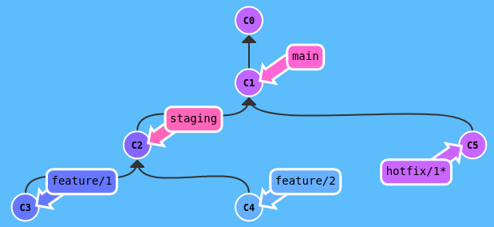
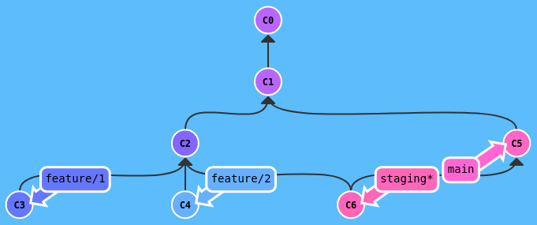
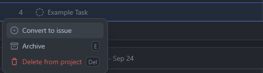

Git workflow¶
For software development projects, the Git tool plays an important role in version management and supporting members to work effectively together. The following article is the theoretical and practical content shared at the training session and is also part of the software development process being applied at TickLab.
The main branches¶
A repository must have at least these two main branches:
- main: where the source code is stable and has been released to production.
- staging: where the source code is latest, ready to be merged into the main branch for the next release.
Note: All branches above are protected to prevent direct commit.
Follow these steps:
- Clone a repository on github, example: https://github.com/ngyngcphu/mkdocs-tool
- Connect repository from local to remote:
- Push branch main up to remote:
- Create branch staging from main:
- Push branch develop up to remote:
- Set protection rules for 2 branches: main and staging at
Settings->Branches->Add branch protection rule.

The supporting branches¶
Besides the main branches, there will be support branches so that team members can work in parallel, easily track features, prepare for release or quickly fix production and staging issues. These support branches will be deleted after using, including:
- Feature branches
- Hotfix branches
- Bugfix branches
- Test branches
- Release branches (Optional)
Using the release branches may not be necessary. Instead, the TickFlow team used a tool that automatically generates releases based on conventional commits, that is release-please-action.
Conventional Commit Messages¶
Summary¶
The commit message should be structured as follows:
The following structural elements:- fix: a commit of the type
fixpatches a bug in your codebase. - feat: a commit of the type
featintroduces a new feature to the codebase - types other than
fix:andfeat:are allowed, recommendsbuild:,chore:,ci:,docs:,style:,refactor:,perf:,test:, and others (based on the Angular convention).
A scope may be provided to a commit’s type, to provide additional contextual information and is contained within parenthesis, e.g., feat(parser): add ability to parse arrays. For more detailed information, refer to Convention Commits.
Commitlint tool¶
Tool checks if your commit messages meet the conventional commit format, helps your team adhere to a commit convention.
Follow these steps:
- Install:
- Configure:
- To lint commits before they are created you can use Husky's
commit-msghook: - Add hook:
- Test the hook:
- Add script in
package.jsonto automatically enable git hook after installing packages byyarn:
Feature branches¶
- Branch off from: staging
- Merge back into: staging
- Branch naming convention: feature/**
Feature branches are used to develop new features for the upcoming releases. Each feature will be a separate branch, created from the latest source code of staging, example: feature/project, feature/member,... After completing the features, features branch will be merged into staging and deleted.
Follow these steps:
- Create a feature branch, ex: feature/part_1 from staging:
- Make some changes to feature/part_1.
- Commit and push feature/part_1 up to remote:

After completing all the code in feature/part_1, make a Pull requests to staging. Then, add reviewers.
Note: All conversations on code must be resolved before a pull request can be merged into a branch.
After pull request has been merged into staging branch on remote. At local, checkout staging, delete feature/part_1 and pull latest code from remote.
Note: A pull request must not exceed 20 files changed. If the feature is too big (> 20 files changed), it should be split into sub-branches, like that: sub-feature-part_1/search-project,...Then, make a pull request from sub-feature-part_1/search-project to feature/part_1, same as above.
Hotfix and bugfix branches¶
Hotfix¶
- Branch off from: main
- Merge back into: main and staging
- Branch naming convention: hotfix/**


Bugfix¶
- Branch off from: staging
- Merge back into: staging
- Branch naming convention: bugfix/**
Hotfix and bugfix branches are utilized to address issues that arise in a system. When a problem occurs, we gather information about how it happened (reproduction case) and promptly take corrective action to restore the system's functionality. This quick fix is applied in the hotfix branch. Following this, we investigate the underlying cause of the problem and take more comprehensive measures to prevent similar issues from occurring in the future. These longer-term solutions are implemented in the bugfix branch.
Test branches¶
- Branch off from: any branch
- Merge back into: none
- Branch naming convention: test/**
If you come up with an idea, like a new method for coding or want to add a new tool to the project, you can try it out in a test branch. This lets you test the idea with safety and separation, reducing the potential impact on the main project.
Release¶
Github Action Workflows¶
A workflow is a configurable automated process that will run one or more jobs. Workflows are defined by a YAML file in the .github/workflows directory of your repository, can be triggered by events like push, pull-requests or on a schedule.
Release workflow is defined in file release.yml.
Release-please-action tool¶
A tool auto-release with Conventional Commit Message.
Set up this action in .github/workflows/release.yml:
release:
runs-on: ubuntu-latest
outputs:
build: ${{ steps.release.outputs.release_created }}
tag_name: ${{ steps.release.outputs.tag_name }}
steps:
- uses: google-github-actions/release-please-action@v3
id: release
with:
release-type: node
pull-request-header: 'Bot (:robot:) requested to create a new release on ${{ github.ref_name }}'
build job to build a package on github container registry (ghcr). This package is a docker image used to run docker-compose.
Note: The release pull request generated by the github-action bot is not allowed to merged into main until the product is fully featured.
Github Project¶
GitHub is a platform for software developers to collaborate and manage not just their code but the overall project planning and task-tracking process through a feature called “GitHub Project”. A project provides various views: spreadsheet, task board, or roadmap integrated with your issues and pull requests, which help your management process always stay up-to-date with the developing process.
Setting up projects¶
- We can navigate to the “Projects” tab from the header.

- Create your first project by clicking on the “New project” button.
- You can either “Start from scratch” or use the provided “Project template” (highly recommended) to get a grasp of this feature.
- Play around with different types of views that your team would be more comfortable with.
Creating and managing tasklist¶
Getting familiar with issues¶
-
A task before converting into issues is just a draft task that doesn’t belong to any repository.

-
After converting them into issues, we would be able to assign tasks to team members and relate them to pull requests and that issue will reside inside a repository. 
-
Each issue has an ID. If you mention an issue in the description section of another issue, it then can be understood as a subtask.

-
Use the checklist symbol before mentioning an issue ID so that it can display similar to the above.

Manage issue via CLI¶
GitHub also offers issues and project management directly from CLI.
- Installation: GitHub CLI.
- Command guideline: GitHub Issues || GitHub Project
Add detailed information to your tasks¶
GitHub provides various data types to add more information to your task:
- A date field to track target ship dates.
- A number field to track the complexity of a task.
- A single select field to track whether a task is a Low, Medium, or High priority.
- A text field to add a quick note.
- An iteration field to plan work week-by-week, including support for breaks.
After converting into issues, you can also add repository information into your task:
- A member of your team to handle the task
- A milestone of your project
- A pull request
Limitation: GitHub free plan would limit some features if you make your repository private, some might be: - Can only assign 1 member to an issue - Can't track both private and public repository in 1 project
Created: October 20, 2023